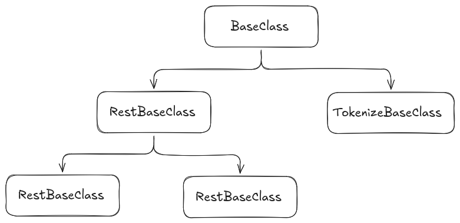

|
Prompt Tools 0.3.2
|
This document provides an overview of the main classes and their relationships in the prompt_base package. The package is designed to provide base classes and utilities for prompt handling, embedding, REST interfaces, and tokenization.

Defines the common plugin interface. Derived classes override initialize() and one or more of sendPrompt(), sendConversation(), get_embeddings(), or get_tokens() depending on the capability they implement.
Inherits from BaseClass and provides common REST transport behavior: parameter loading, optional API-key lookup from environment variables, default option loading, HTTP request dispatch, and JSON error extraction.
Inherits from RestBaseClass and provides the prompt-specific REST flow. Derived classes implement JSON conversion for one-shot prompts and conversation prompts plus response parsing.
Inherits from RestBaseClass and provides the embedding-specific REST flow. Derived classes implement request serialization and response parsing for embedding providers.
Inherits from BaseClass and provides the tokenization interface. The current bundled implementation uses local software through cpp-tiktoken, but other implementations can provide different local or remote tokenization behavior.
Located in include/prompt_base/utils/, these headers provide supporting structures and functions:
conversions.hpp: Utility functions for converting between ROS messages and the internal request and response structs.exceptions.hpp: Custom exception classes for error handling in prompt operations.prompt_options.hpp: Functions for loading default option values from ROS parameters and merging them into request options.structs.hpp: Common data structures used across the base classes.PromptBaseClass and EmbedBaseClass inherit from RestBaseClass.TokenizeBaseClass inherits directly from BaseClass.prompt_bridge are exported against the same prompt::BaseClass pluginlib base.The package is designed for extensibility, allowing developers to implement custom prompt providers, embedders, REST services, and tokenizers by inheriting from these base classes and overriding their virtual methods.